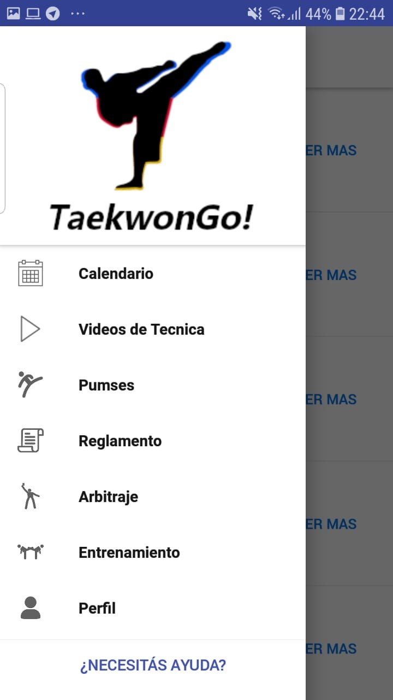

Si deslizamos el dedo por la parte izquierda de la pantalla hacia la derecha, o tocamos el icono que son 3 líneas rectas paralelas en la esquina superior izquierda de cada pantalla, podremos ver un menú en el que aparecen todas las pantallas de la aplicación.
Haciendo click sobre cada una de ellas podemos acceder a las distintas pantallas de la aplicación. Al final del menú, haciendo click en “¿NECESITÁS AYUDA?” se accede al manual online.
Dependiendo del tamaño de pantalla de cada celular se mostrarán más o menos pantallas por lo que es posible deslizarse por este menú para acceder a todas ellas que no están visibles.